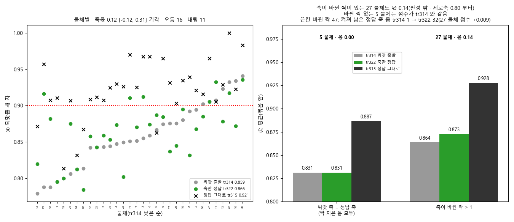

실험 m2_tr0322_h075_축만
목표 G1.2 view 모음 → 파츠별 CAD code(CadQuery · 그 전 「3 면도 → 파츠별 CAD」 · 지금 M2 는 위 · 앞 · 옆 고정 세 장만 받음 → 아무 각도 N 장으로 바꿀 것 · 11-20) · G1 첫 제품 — 피규어 · 메카 사진 여러 장 + 치수 → 숨은선 3 면도 + 파츠별 CAD · G0 임의의 이미지 → CAD 코드 · 빌린 가정 5: 정사영 · 시점앎 · 흰바탕 · 렌더화풍 · 정답3D · 갚는 계획: 진단 · 정답 만들기 — 껍데기를 그릴 어휘가 정해지면 그 어휘로 CAD code 정답 변환(m2 학습 · 비교는 그 뒤 카드) · 목표 시험지 값: 안 잼 (!)
tr315 의 ④ 오름은 주로 뺌 몸의 축(방향) 덕인가 — 지금 씨앗의 축만 정답으로 주면 오름의 몇 할을 되찾나?
| 가설 | 주장 | 결과 | 근거 |
|---|---|---|---|
| m2-H75 | tr315 오름은 주로 뺌 몸 축 덕이다 — 축만 정답으로 주면 tr315 오름의 70 % 이상을 되찾는다 | 기각 | S6 합성 정답 32 · 짝 지은 씨앗 85 의 축만 정답 ④ 되맞춤 새 자 평균 0.8662(tr314 0.8588 · tr315 0.9214) · 축몫 0.1189(≤ 0.3 → 기각) · 축몫 구간 [−0.1179, 0.3081] · 넷차 +0.0074 구간 [−0.0065, 0.0215] · 오름 16 · 내림 11 · 같음 5 · 물체별 차 중앙값 +0.0044 · 0.9 넘은 물체 7/32(tr314 7 · 새로 넘음 3 · 14 · 29 · 떨어짐 10 · 15 · 26) · 가장 큰 오름 29 +0.1284 · 16 +0.0937 · 21 +0.0686 · 가장 큰 내림 10 −0.0623 · 8 −0.0605 · 23 −0.0471 · 최소 0.7846(물체 20) · tr315 보다 높은 물체 2 · 뺌 찾음 36/93(tr314 28 · tr315 74) · 남은 뺌 몸 평균 2.78(tr314 2.41 · tr315 2.5) · 하네스 실패 0 · CAD 안 끝남 0 · 조용한 실패 0 · 판 폴더 0.07 GB · 끝 단계 23.7 분(13:19:22 → 13:43:02 · tr314 23 분) · 판정 밖(b322분석 · 씨앗 축 = 키움301._놓기 규칙 · 자취 걸음 0 짝 칸 축 = 정답 축 85/85 확인): 짝 85 중 씨앗 축 ≠ 정답 축 47 · 같음 38 · 바뀐 짝 없는 물체 5(1 · 19 · 24 · 25 · 27) 은 점수가 tr314 와 같음(최대 차 0 · 0.8313) · 바뀐 짝 ≥ 1 인 27 물체 몫 0.138(0.8638 → 0.8727 · tr315 0.9278) · 바뀐 짝 있는 27 물체 몫 구간 [−0.134, 0.351] · 끝칸(같은 칸 번호 짝 · b322끝) 바뀐 짝 47 켜져 남음 tr314 25 · tr322 32 · 그중 정답 축 1 · 32 · tr314 씨앗 축 23 · 같던 짝 38 켜져 남음 25 · 26(모두 정답 축) · 정답 축 몸 31 늘어남 · 점수 차 +0.0074 |
결정 표(돌리기 전에 정함)
- 만약 지지
다음 축이 주된 원인 — 입력에서 축을 잡는 씨앗 고침 카드 - 만약 기각
다음 축 혼자는 아님 - 만약 약함
다음 섞임 — 숫자 그대로 적고 사용자와 고름
분석
한 줄로
물음: tr315 에서 뺌 몸을 정답 그대로 출발시키자 관문 ④ 가 0.8588 → 0.9214 로 올랐다. 그 오름은 주로 뺌 몸의 축(방향) 덕인가? 지금 씨앗에서 축만 정답으로 주면 오름의 몇 할을 되찾나?
답: 12 % 만 되찾았다(축몫 0.12 · 구간 [−0.12, 0.31]). 평균은 0.8662 이다. 축몫이 기각 선(0.3) 아래라 판정은 기각이다. 결과 전에 적은 예측도 기각이었다. 축이 실제로 바뀐 짝이 있는 27 물체만 봐도 몫은 0.14 다(판정 밖 · 구간 [−0.13, 0.35]). 끝에서 정답 축으로 남은 몸은 크게 늘었지만 점수는 거의 그대로다.
왜 이 실험을 했나
우리 목표는 메시를 부품 CAD 코드로 바꾸는 것이다. 이 판들은 그 정답을 만드는 변환이 얼마나 충실한지 본다. tr316 ~ 318 에서 뺌 몸의 자리 · 종류 · 크기를 하나씩 정답으로 줬지만 셋 다 혼자서는 오르지 않았다. tr318 에서 축이 정답과 다른 짝은 크기가 더 벗어났다. 그래서 사용자가 고른 A 네 판 가운데 셋째(A3)로 축 하나만 정답으로 줬다.
낱말 몇 개를 먼저 풀어 둔다.
- ④ 는 본 판 전에 거치는 관문이다. 뺌 어휘로 직접 만든 합성 정답 32 개(물체 0 ~ 31)를 같은 맞춤으로 다시 맞춰(되맞춤) 정답을 되찾는지 본다.
- 뺌 몸 은 더한 몸에서 파내는 몸이다. 씨앗 은 입력에서 파인 점을 k-평균으로 네 덩이로 나눠 뺌 몸을 처음 놓는 자리다. 씨앗의 축은 덩이의 가장 긴 쪽이다.
- 축 은 몸 틀의 세로 방향(z · x · y 중 하나)이다.
- 끝 단계 는 고른 출발을 다듬는 단계다. 입력 점수가 오르면 몸을 끄거나 뒤집고(R7), 점수를 거의 안 바꾸는 몸은 지운다(가지치기).
바꾼 것 하나
씨앗 넷과 정답 뺌 몸을 가운데 거리로 짝지었다(tr317 · 318 과 같은 짝 85). 짝 지은 씨앗의 축만 정답 축으로 박았다. 크기는 같은 씨앗 덩이를 그 축 틀로 다시 읽었다. 자리 · 종류 · 몸 수는 지금 씨앗 그대로다. 85 짝 가운데 38 은 씨앗 축이 이미 정답 축과 같아 tr314 와 같은 출발이고, 47 만 바뀌었다. 나머지는 tr314 와 같다.
결과

왼쪽 그림의 가로축은 tr314 점수가 낮은 물체부터 늘어놓은 순서다. 초록(이 판)은 회색(tr314) 위아래로 흩어져 있고, 검은 ×(tr315)에 닿은 물체는 드물다. 오른쪽은 물체를 축이 바뀐 짝이 있는지로 나눈 평균이다(판정 밖). 바뀐 짝이 없는 5 물체는 초록과 회색이 같아(왼쪽에서도 초록이 회색을 덮음), 27 물체 묶음에서도 초록은 회색에 가깝다.
| 축만(이 실험) | 씨앗 출발(tr314) | 정답 그대로(tr315) | |
|---|---|---|---|
| 되맞춤 새 자 평균 | 0.8662 | 0.8588 | 0.9214 |
| 되찾은 몫 | 0.12 [−0.12, 0.31] | 0 | 1 |
| 0.9 넘은 물체 | 7/32 | 7/32 | 27/32 |
| 뺌 자리 찾음 | 36/93 | 28/93 | 74/93 |
| 끝에 남은 뺌 몸(물체 평균) | 2.78 | 2.41 | 2.5 |
| 하네스 실패 · CAD 안 끝남 | 0 · 0 | 0 · 0 | 0 · 0 |
새 자는 정답 메시와 맞춘 메시의 표면 점이 서로 0.02 안에 드는 정도를 F 점수(0 ~ 1)로 잰 값이다. 거리 단위는 정답을 둘러싼 상자의 가장 긴 변을 1 로 둔 것이다. 되찾은 몫은 (이 판 − tr314) ÷ (tr315 − tr314) 다. 대괄호는 물체를 짝지어 다시 뽑은(부트스트랩 2,000 번) 95 % 구간이다.
왜 이렇게 나왔나
확인한 것
- 짝 차는 +0.0074, 구간은 [−0.0065, 0.0215] 로 0 을 걸친다. 오름 16 · 내림 11 · 같음 5, 물체별 차 중앙값 +0.0044 다. 0.9 를 새로 넘은 물체는 3 · 14 · 29, 떨어진 물체는 10 · 15 · 26 이다. 가장 큰 오름은 29(+0.13), 가장 큰 내림은 10(−0.06)이다.
- 축이 바뀐 짝이 없는 5 물체(1 · 19 · 24 · 25 · 27): 점수가 tr314 와 같다(최대 차 0). 출발이 같다는 것은 놓기 코드 규칙에서 미룬 것이다(tr314 는 자취가 없어 직접 견주지 않음).
- 축이 바뀐 짝이 하나라도 있는 27 물체: 몫 0.14 다(0.8638 → 0.8727 · tr315 0.9278 · 구간 [−0.13, 0.35]).
- 끝칸(고른 출발 · 끝 단계 뒤 · 같은 칸 번호의 몸을 짝으로 봄): 축이 바뀐 짝 47 가운데 켜진 뺌으로 남은 몸은 tr314 25 · 이 판 32 다. 그중 정답 축인 몸은 tr314 1 · 이 판 32 다. tr314 의 나머지 24 개 중 23 개는 씨앗 축 그대로였다. 이 판에서 꺼지지 않은 몸은 모두 정답 축이고, 빠진 15 개는 축이 바뀐 것이 아니라 꺼진 것이다. 축이 같던 짝 38 은 tr314 25 · 이 판 26 이 켜져 남았고 모두 정답 축이다.
- 끝에 정답 축으로 남은 몸이 31 개 늘었는데 점수 차는 +0.0074 다. 뺌 자리 찾음은 28 → 36 으로 늘었다.
- 몸마다 축 몫을 센 방법: 씨앗 축은 맞춤이 씨앗을 놓는 규칙(덩이 가장 긴 쪽)으로 다시 셌다. 이 판 자취 걸음 0 에서 짝 칸의 축이 정답 축과 85/85 같은 것을 확인했다.
짐작 (아직 확인 안 함)
- 정답 축 몸이 31 개 늘고 찾음이 8 개 늘었는데도 점수가 거의 안 오른다(잼). 그래서 축 하나만 맞아서는 자리 · 크기 · 종류가 틀린 몸이 정답 몸 노릇을 못 하는 것으로 보인다. 축이 맞은 몸의 자리 · 크기가 정답에 얼마나 가까운지는 재지 않았다.
- 자리 · 종 · 크기(tr316 ~ 318 카드) · 축(이 판) 넷 다 혼자는 기각이고, 몸 수만 씨앗으로 둔 tr320 은 64 % 를 되찾았다. 그래서 오름은 성분 하나가 아니라 여럿이 함께 맞을 때 나오는 것으로 보인다. 다만 tr320 과 이 판은 바꾼 것이 달라 같은 기준의 비교가 아니다.
한계
- 정답에서 축을 빌린 진단이다. 실제 물체에 그대로 쓸 수 없다.
- 짝을 고를 때 정답 가운데를 썼다.
- 축을 바꾸면 같은 덩이를 다른 축 틀로 읽어 크기 값도 바뀐다(세계 상자는 같음). 축과 크기 틀이 엮여 있다.
- 85 짝 중 47 짝만 실제로 바뀌었다. 판정 몫은 바뀌지 않은 물체 5 개를 포함한 32 물체 평균이다.
- 묶음별 몫 · 끝칸 셈은 판정 밖이고 결과 뒤에 셌다. 묶음 구간은 재지 않았다.
- 오른쪽 그림의 세로축은 0.80 부터라 막대 차가 커 보인다.
- 판정 구간 [−0.12, 0.31] 의 위끝이 기각 선 0.3 을 넘는다. 기각은 점 몫 기준이고, 30 % 남짓까지는 배제하지 못한다.
- 정답이 아닌 쪽으로 출발을 흔든 대조(틀린 축 · 무작위 축)가 없다. 물체마다 ±0.06 쯤 오르내린 것이 정답 축 효과인지 출발 흔들림인지 가르지 못한다.
- 묶음(바뀐 짝 있음 · 없음)은 결과를 본 뒤 나눴다.
- 한 번만 돌렸다. tr314 를 지금 코드로 다시 돌리지 않았다. 다만 출발이 같은 5 물체는 점수가 똑같아 같은 코드에서 결과가 되풀이됨은 확인된다.
- 끝 단계는 23.7 분 걸렸다(tr314 23 분). tr321 · tr323 GPU 단계와 겹쳤고 CAD 안 끝남은 0 이다.
배운 것과 다음
축만 정답으로 주면 오름의 12 % 만 되찾는다(점 몫이 기각 선 아래 · 구간 위끝 0.31). 자리 · 종 · 크기 · 축 넷 모두 혼자서는 점 몫이 기각 선 아래다.
- 성분 하나만 맞춰서는 오르지 않는다(넷 다 기각 · 자리 · 종 · 크기는 tr316 ~ 318 카드 · 축은 이 판). tr320 에서 몸 수만 남기고 나머지를 다 주면 64 % 를 되찾았다(다른 판 · 짐작으로 이음).
- tr321(종류만 씨앗) · tr323(몸 수만 정답)이 남았다. A 네 판 결과를 다 본 뒤 감시 세션이 사용자에게 다음을 묻는다.
- 바탕은 지금 맞춤 코드 그대로 둔다.
검토 (11-27 맥락 없는 서브 에이전트 · 보고 · 카드 · 잼 · 넷 셋 · 결과_pc.png · b322분석.py · b322.json · 그림322.py · 껍데기313 · 키움301 · 끝칸 · 자취만 봄)
- 숫자는 모두 다시 센 값과 같음 · b322분석.py 셈 버그 없음(칸 번호 · 씨앗 축 규칙 · 끝칸 축).
- 가장 큼: 「47 중 32 가 정답 축 그대로 남음」 은 축 유지 비율처럼 읽힘 — 켜져 남은 몸은 모두 정답 축이고 나머지는 꺼짐. tr314 끝칸 대조 빠짐(바뀐 짝 47: 켜짐 25 → 32 · 정답 축 1 → 32).
- 「잼: 넷 다 기각」 출처는 다른 판 카드 · 굵은 결론 「못 만든다」 는 구간 위끝 0.31 이라 단정 과함 · 「출발 같음」 은 코드에서 미룸 · 찾음 28 → 36 해석 없음.
- 그림: 오른쪽 제목 셋째 줄 · 바뀐 짝 없는 5 물체는 왼쪽에서 초록이 회색을 덮음 · 작은 글씨.
- 빠진 한계: 판정 구간이 기각 선을 걸침 · 흔든 대조 없음 · 묶음 구간 [−0.13, 0.35] · 묶음은 결과 뒤 나눔.
고친 줄 (검토 반영)
- 끝칸 문장 → 켜져 남은 몸 · 그중 정답 축 · tr314 대조(내가 다시 셈 b322끝.py · 바뀐 짝 tr314 25 · 1 · 씨앗 축 23 / tr322 32 · 32 · 0 · 같던 짝 25 · 26 모두 정답 축)를 확인한 것에 넣음 · 짐작 1 의 근거로 이음.
- 묶음 구간 −0.13, 0.35 · 출발 같음은 코드에서 미룸 · 넷 다 기각 출처 · 굵은 결론 「점 몫이 기각 선 아래」.
- 한계 셋 더함 · 그림 오른쪽 제목 셋째 줄 · 막대 글씨 크기.